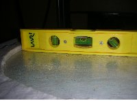
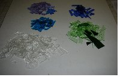
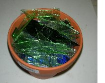
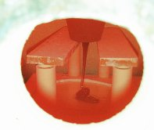
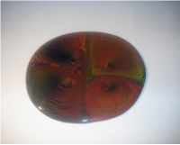

|
Pot melt är en spännande teknik. Man vet aldrig vad kommer ut ur ugnen. Tekniken är enkel. man borde ha en rund damm av rostrfritt stål. Det har jag inte. Därför gör jag dammen av tjock fiberpapper. Billigt är det också. Det kosta bara el och tid. Glasmaterialet är av restbitar. Ugnplattan måste vara absolut vågrätt. Checka noga.med vattenpass Bild 1. Tips :man kan använda bitar av fiberpapper för att jämna ut höjden av stöd.
Man sorterar glasbitarna efter färgen. Bild 2.
Innan man sätter glasbitarna i krukan
lönar det att med en hammare och spik göra plantkrukans hål större .
I bilden 3 har jag packat glasbitarna vågrätt. Färgblandingen blir annorlunda on man packar dem vertikalt. Bifogad är tabeller hur mycket glas man behöver. Jag brukar ha 750 gram för en platta av circa 20 cm diameter. Bilden 4 visar hur man sätter krukan. Pelarna behöver inte vara så höga. Bild 5 visar hur det går till i ugnen. Det tar ett par timmar innan krukan är tom. Det gör ingenting om där blir kvar en tunn glasstrimla från krukan. Hettan 780-850 grad betyder att separatorn fastnar under glaset. Blötlägga i ättika över natter och bårsta bort. En variant är att stapla glasbitar rak på ugnsplattan. Man bygger en hög som är inte större än hälften av slutliga diametern. Då använder jag gärna pint från glasblåsaren. I glasblårsning färgar man ofta bara ytan av glaset. Denna färgytan sprider till spännande slöjor inon glasvolymen. Se: http://lauri.lsd.dk/lasi/galleries/lauri/kierratys.php |
Bilder Klicka i bilden för att se denstörre |

Bild 1.  Bild 2  Bild 3  Bild 4. En titt i ugnen  Bild 5 Med krukan som hade flera hål |
{kind=link}
{kind=link}
{kind=link}
{kind=link}
{kind=link}